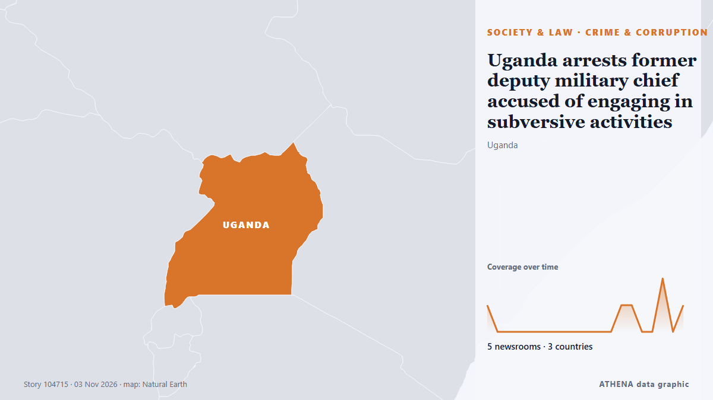

Crime & corruption
SponsoredPresented by  Cybernetics and Artificial Intelligence Lab Welcome to the Cybernetics and Artificial Intelligence Laboratory, established at the Department of Business Administration of the National and Kapodistrian University of Athens. The lab is headed by Professor Dimitrios Thomakos. The lab aims to do research that can be published in top venues. Our research uses tools and methods of Artificial Intelligence, and lies in the following areas: - Forecasting - Decision making - Cyber security - Finance We are always looking forward to collaborating with exceptional students!
Cybernetics and Artificial Intelligence Lab Welcome to the Cybernetics and Artificial Intelligence Laboratory, established at the Department of Business Administration of the National and Kapodistrian University of Athens. The lab is headed by Professor Dimitrios Thomakos. The lab aims to do research that can be published in top venues. Our research uses tools and methods of Artificial Intelligence, and lies in the following areas: - Forecasting - Decision making - Cyber security - Finance We are always looking forward to collaborating with exceptional students!
| 21 Oct | 0 |
|---|---|
| 22 Oct | 0 |
| 23 Oct | 0 |
| 24 Oct | 1 |
| 25 Oct | 0 |
| 26 Oct | 0 |
| 27 Oct | 0 |
| 28 Oct | 0 |
| 29 Oct | 1 |
| 30 Oct | 2 |
| 31 Oct | 2 |
| 1 Nov | 8 |
| 2 Nov | 7 |
| 3 Nov | 2 |

Uganda arrests former deputy military chief accused of engaging in subversive activities
By Nana Karikari, Senior Global Affairs Correspondent Security forces in Uganda have arrested former deputy military chief Peter Elwelu on allegations of involvement in subversive activities intended… from GBC Ghana Online
S'porean, 29, who ran over & killed cyclist who stole backpack in Australia, jailed 5 years & 9 months
He accelerated believing that the car's transmission was in reverse, and ran him over. from Mothership
Summary of external news of North Korea this week
SEOUL, Oct. 23 (Yonhap) -- The following is a summary of external news on North ... from Yonhap (English)
Mexican investigators raid storage unit rented by Meghan's father Thomas Markle
The Metropolitan Police acknowledged receiving a letter in 2019 regarding accusations about Meghan Markle’s father but did not share this information with other law agencies. from Arab News
2 brothers arrested for allegedly shooting dead cheetah in Madhya Pradesh
During interrogation, Singh allegedly confessed that on October 24, he and Pritam Singh had gone to the forest to hunt a wild boar. from Hindustan Times
Shooting at Spirit Halloween in California leaves at least one dead
Law enforcement at the site of a mass shooting where one person was killed and six others wounded, at a Spirit Halloween store in Fairfield, Calif., in the early morning hours of Saturday, Oct. from The San Juan Daily Star
2027 Politics Watch – Sunday’s Roundup: Atiku challenges Tinubu on power as Kwankwaso tells him to stand down
Atiku Abubakar challenged the APC’s defence of President Tinubu’s electricity record and proposed replacing the tariff-band system. from Premium Times
German police investigating after needles found in Halloween candy
German police said they received phone calls with reports about sharp objects concealed in Halloween candy. from DW English
Five arrested after brutal farm robbery in which Ventersdorp farmer had ears cut off
A massive police investigation into a violent farm robbery in Ventersdorp has resulted in five arrests, with police recovering four firearms, two of which are linked to the attack on a 50-year-old… from IOL
Greek Charity Scandal: Alleged Fraud Reaches Back to 2018
Investigators say a nonprofit that solicited donations for seriously ill children raised €3.9 million, but only €1.1 million reached identified beneficiaries, as new allegations emerge about its… from to vima
Myanmar Remains on FATF Blacklist Due to Money Laundering Concerns
The Paris-based group's announcement came after a report which said that Japanese officials had lobbied for the country's removal from its list of "high-risk jurisdictions." from The Diplomat
Japan calls on U.S. military to strengthen discipline after arrest of another U.S. Marine
The latest arrest took place on Saturday, according to media reports. from CNA (Channel NewsAsia)
Police with assault rifles begin Sydney patrols in wake of Bondi attack
SYDNEY: A new police unit armed with military assault rifles has begun patrolling the streets of Sydney, in an Australian-first measure set up in response to the Bondi Beach attack last December. from Business Recorder
Halloween shootings leave at least 24 dead and 94 wounded in the US
The shootings unfolded at nightclubs, costume stores, outside stadiums and near college campuses. from The Straits Times
Chinese Communist Party taps big data surveillance to combat corruption
A Central Committee resolution said the party would also combat corruption involving virtual currencies and blockchain. from Free Malaysia Today
Police probe Jeffrey Epstein’s time spent at Balmoral with Andrew Mountbatten-Windsor
Scottish police are investigating the time convicted sex offender Jeffrey Epstein spent with Andrew Mountbatten-Windsor at Balmoral, a private royal estate in Scotland which is a favored retreat for… from Egypt Independent
Najib yet to pay RM50mil fine for house arrest, says AG
Dusuki Mokhtar confirms that the former prime minister will remain in prison until the fine is settled. from Free Malaysia Today
Man jailed and fined for spitting at police officers, urinating in their direction
After he was arrested and brought to Changi General Hospital, Morris David threatened to defecate and throw his faeces at the police officers. from CNA (Channel NewsAsia)
Police arrest 11 over attack on Sowore in Ekiti
The police had dismissed reports that Sowore was kidnapped by armed men in the state capital, describing the incident as an altercation with some individuals at a restaurant around the Dalimore area… from Vanguard